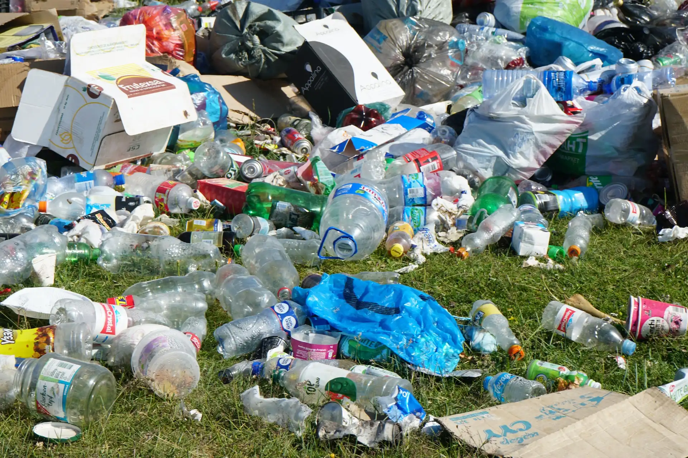
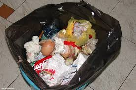
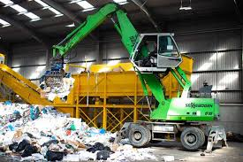
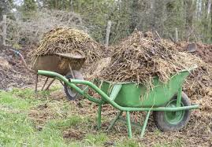
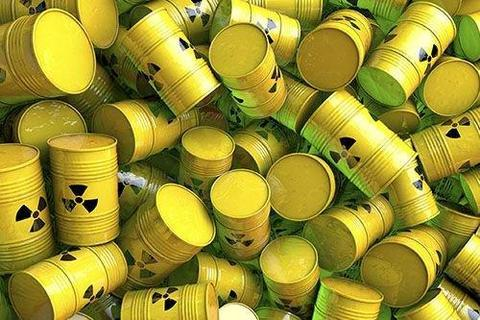
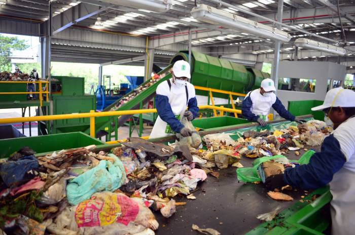

LA BASURA
La basura carece de valor económico, pero veremos más adelante que no siempre es así. Los conceptos de sustentabilidad y sostenibilidad, de la mano de la responsabilidad social, lo toman como un principio muy importante. Adicionalmente, tiene a la economía circular y el valor compartido para lograr impactar lo menos posible al medio ambiente.
Pese a que la basura suele ser acumulada en vertederos o enterrada para que se complete allí el proceso de descomposición sin afectar al entorno, en los últimos años ha avanzado el reciclaje, que consiste en recuperar a los residuos para transformarlos en un objeto con nueva vida útil.
QUE ES LA BASURA
La basura se define en la Ley General para la Prevención y Gestión Integral de los Residuos (LGPGIR) como aquellos materiales o productos cuyo propietario o poseedor desecha y que se encuentran en estado sólido o semisólido, líquido o gaseoso y que se contienen en recipientes o depósitos; pueden ser susceptibles de ser valorizados o requieren sujetarse a tratamiento o disposición final conforme a lo dispuesto en la misma Ley (DOF, 2003).

DEFINICION DE BASURA
La palabra residuo (con origen en el latín residŭum) o basura describe al material que pierde utilidad tras haber cumplido con su misión o servido para realizar un determinado trabajo. Por lo tanto, el concepto de residuo se emplea como sinónimo de basura, es decir, por hacer referencia a los desechos que el hombre ha producido.
Tipos de basura:
- Basura solida
Los que componen la basura doméstica.

- Basura industrial
Dentro de la basura que genera la industria es conveniente diferenciar entre:
- Basura inerte.- Que son escombros y materiales similares, en general, no peligrosos para el medio ambiente. Aunque algunos procedentes de la minería pueden contener elementos tóxicos.
- Similares a basura sólida urbana.- Restos de comedores, oficinas, etc.
- Basura peligrosa.- Que por su composición química u otras características requieren tratamiento especial

- Basura agraria
Son los que proceden de la agricultura, la ganadería, la pesca, las explotaciones forestales o la industria alimenticia.

- Basura medica y de laboratorios
Restos del trabajo clínico o de investigación.

- Basura radiactiva
Materiales que emiten radiactividad.

MANEJO Y TRATAMIENTO DE LA BASURA
El manejo y tratamiento de la basura inicia con la recolección de los mismos. Posteriormente, su transporte hasta las instalaciones preparadas su manejo. Finalmente su tratamiento intermedio o definitivo.
Este tratamiento de la basura puede ser el para su aprovechamiento o para su eliminación final.
En los últimos años se ha incrementado el interés para que esta actividad genere el menor riesgo para la salud y el medio ambiente.

Alumno: Jose Eduardo Cravioto Fuentes